Sentiment Analysis: Amazon Kozmos Reviews
I performed sentiment analysis on customer reviews for Kozmos using NLP preprocessing and NLTK labels, then trained TF-IDF based Logistic Regression and Random Forest models.
 View on Kaggle
View on KagglePortfolio Projects
I performed sentiment analysis on customer reviews for Kozmos using NLP preprocessing and NLTK labels, then trained TF-IDF based Logistic Regression and Random Forest models.
View on KaggleDeveloped a credit scoring system to classify customers as Good, Standard, and Poor with ANN and SMOTE, including data cleaning, encoding, scaling, and evaluation.


Analyzed UK online retail data with RFM scoring, K-Means segmentation, and cohort analysis to understand customer behavior and retention.
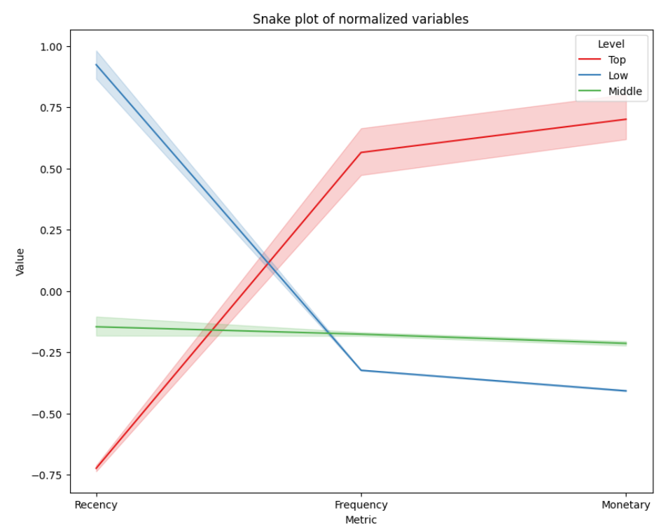
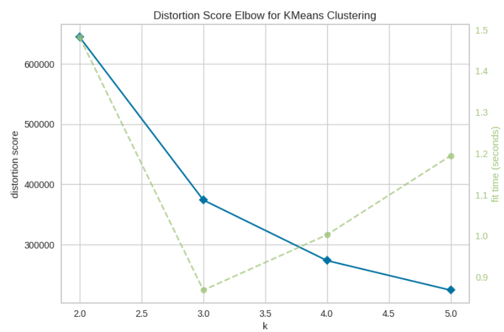
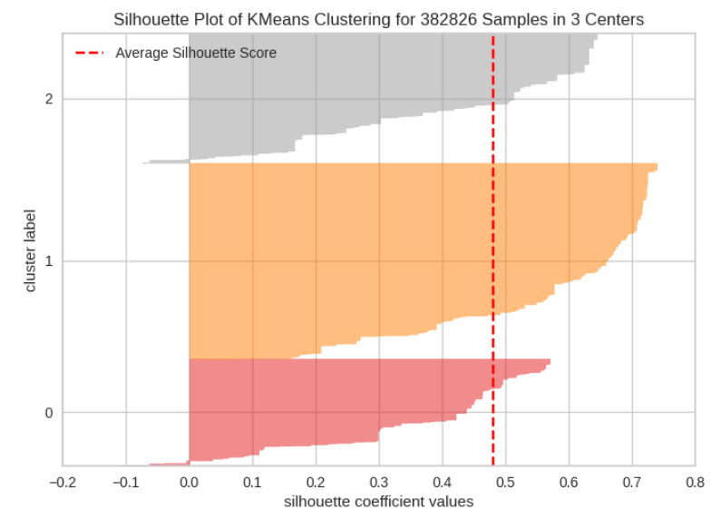
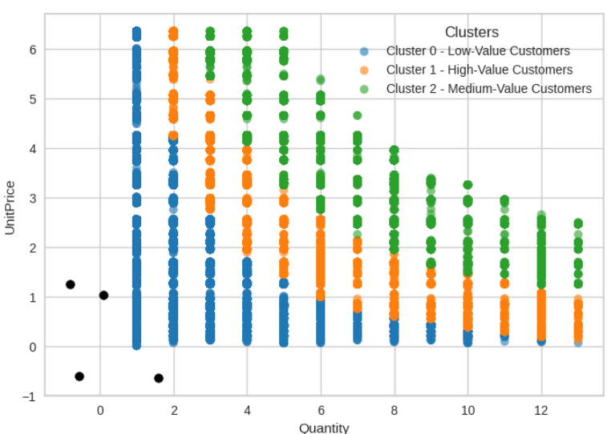
Used the ANSUR II anthropometric dataset for ethnicity prediction, combining EDA, multiple classifiers, SMOTE balancing, and SHAP explainability.
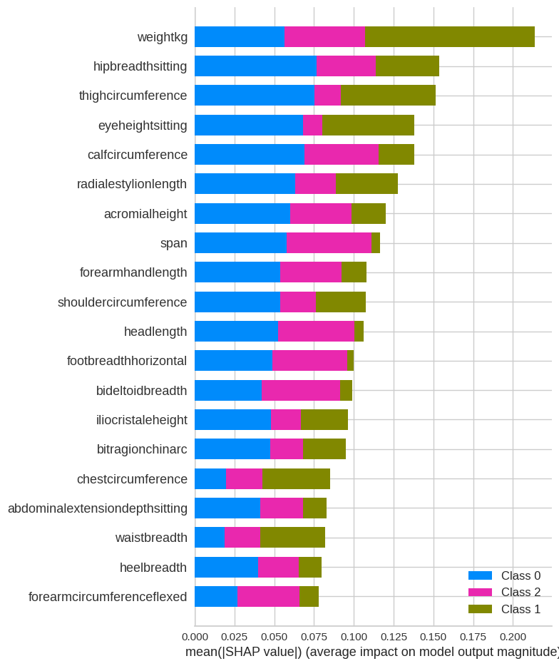
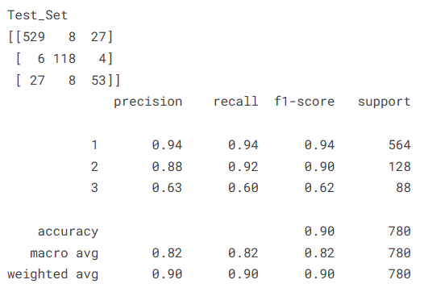
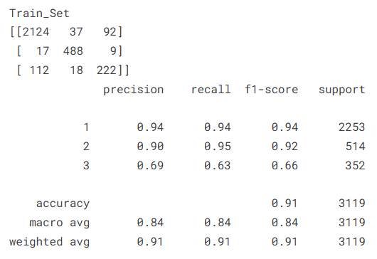
Performed EDA, hypothesis testing (Kruskal-Wallis, Dunn, Chi-squared), and linear modeling on global tech salary data in R.
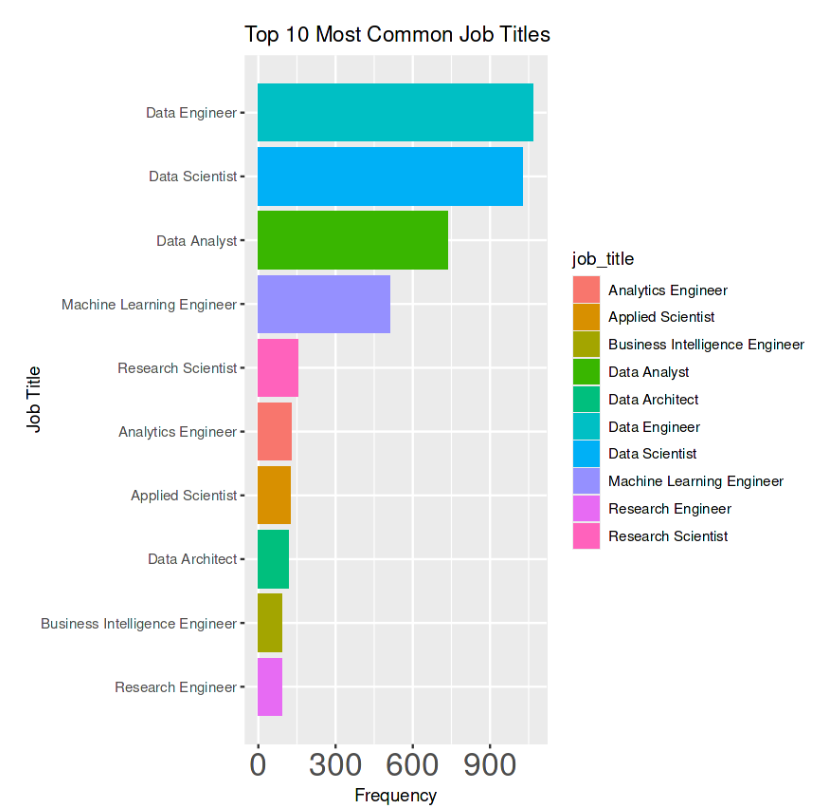
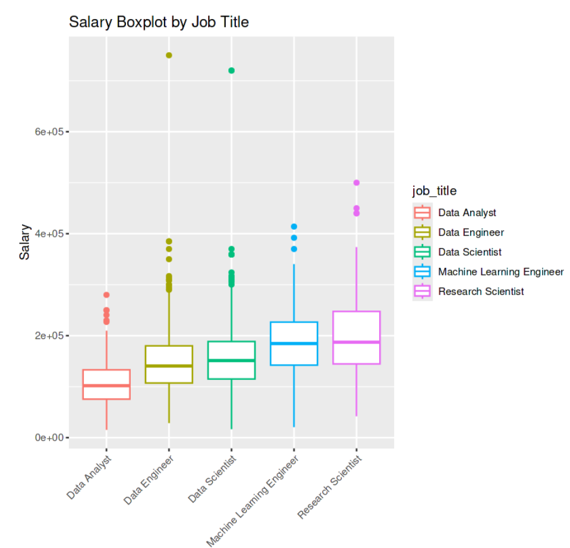
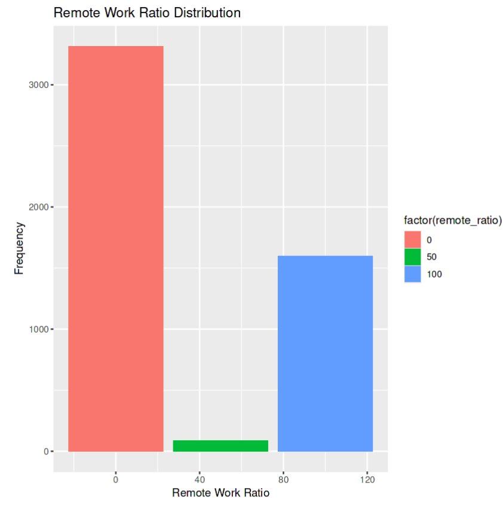
Completed data cleaning, EDA, feature engineering, visualization, and Kruskal-Wallis testing for online retail behavior and sales trends.
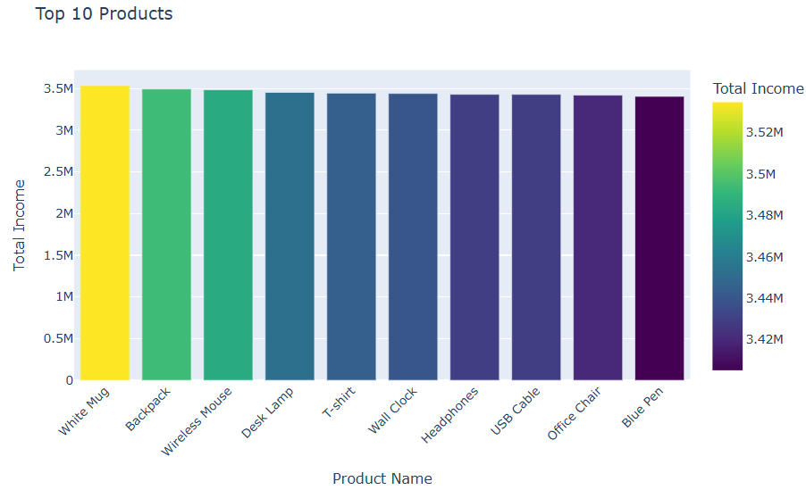
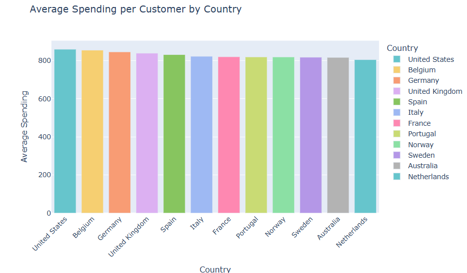
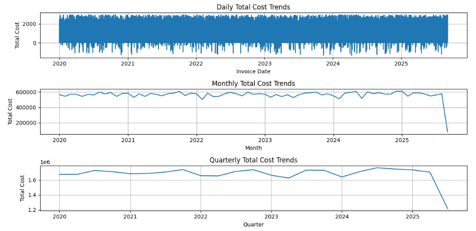
Built a full Power BI dashboard with drillthrough, tooltips, slicers, and an animated bar race for product, customer, and regional analysis.


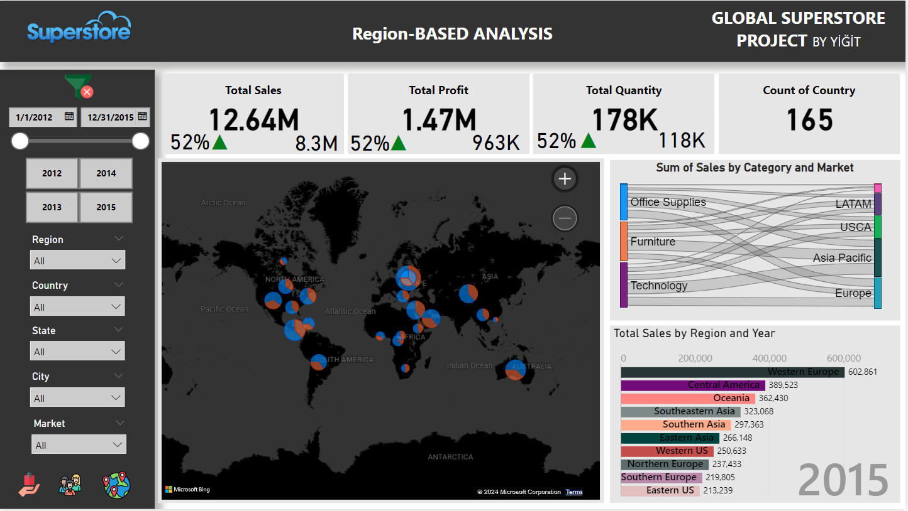